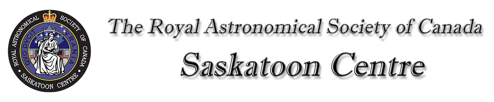
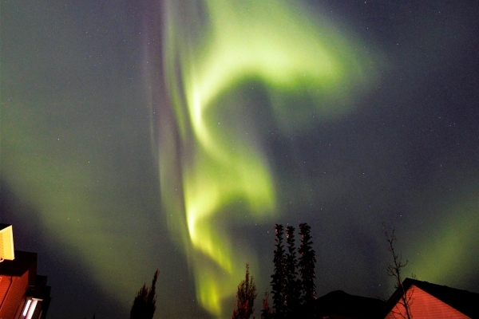

 |
Public & Media Events |

November 4, 2021 during an Aurora storm by Ron Waldron. Canon SLR camera ISO 800, 10 sec exp.
All events are free of charge and open to the general public unless otherwise noted.
Public events are in green text.
Centre member-only events are shown in black text.
Selected astronomical events of interest are in purple text.
2026
April 18 - Observer's Group Night at the Sleaford Observatory
April 20 - RASC General Meeting - Hybrid: In-person U of S Observatory & On-line
*NOTE: THIS EVENT HAS BEEN CANCELLED DUE TO WEATHER*
April 25 - 8:22 PM RASC Public Viewing for International Astronomy Day J.S. Wood Public Library (in the park adjacent to the library)
*NOTE: Weather Permitting*
May 1 and May 9 7:30-9:30 PM - Beginner Astronomy and Stargazing Workshops
Long time RASC member and astro-educator Ron Waldron will present two introductory workshops designed for those beginning their astronomical journey. See https://www.facebook.com/groups/rascsaskatoon for details. You must be registered to attend.
May 16 - Observer's Group Night at the Sleaford Observatory
May 18 - RASC General Meeting
June 13 - Observer's Group Night at the Sleaford Observatory
June 15 - RASC General Meeting
July 11 - Observer's Group Night at the Sleaford Observatory
August 11 - 16 - Saskatchewan Summer Star Party - 29th Annual SSSP at Cypress Hills Provincial Park.
September 12 - Observer's Group Night at the Sleaford Observatory
September 21 - RASC General Meeting
October 10 - Observer's Group Night at the Sleaford Observatory
October 19 - RASC General Meeting
November 7 - Observer's Group Night at the Sleaford Observatory
November 16 - RASC General Meeting
December 12 - Observer's Group Night at the Sleaford Observatory
2044
August
August 17–22 or August 22–28 – Saskatchewan Summer Star Party 2044
47th Annual SSSP at Cypress Hills Provincial Park. Stay tuned for program details.
August 22 – Total Eclipse of the Sun – Visible from the Saskatchewan Summer Star Party. SSSP'44 is on the Centre Line.
For More Information
See our Newsletter or email us.
For SSSP information: sssp.sk@sasktel.net or visit the Star Party homepage.
To join the Saskatoon Centre, click here.
Sleaford Observatory
One of the benefits of membership is access to our Sleaford Observatory. For information, contact Darrell Chatfield.
Observing/Imaging Group
The RASC Saskatoon Centre has an active Observing/Imaging Group. Contact the Group Coordinator for details.
Email: sk_centre@rasc.ca
RASC Inc.
PO Box 31086, RPO Broadway
Saskatoon, SK S7H 5S8